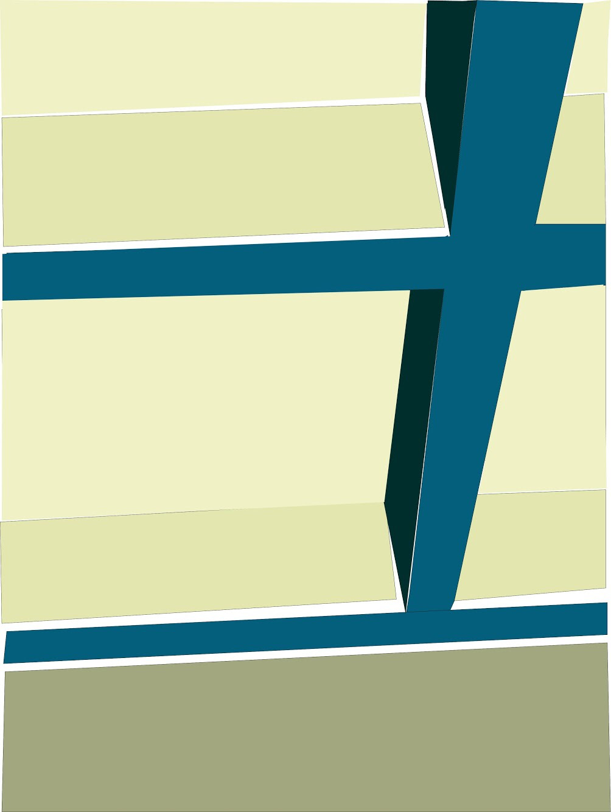
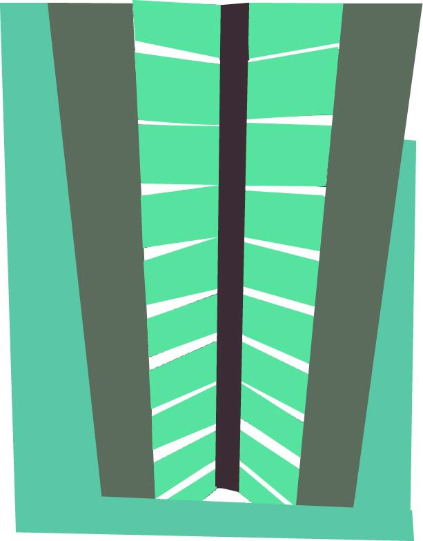
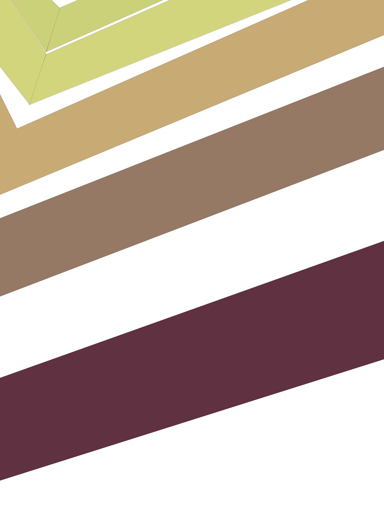
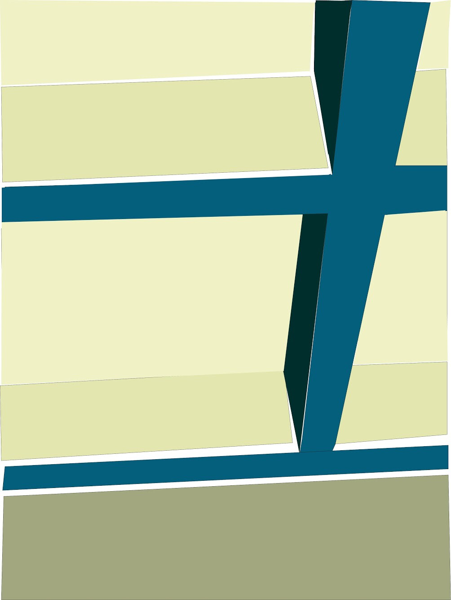
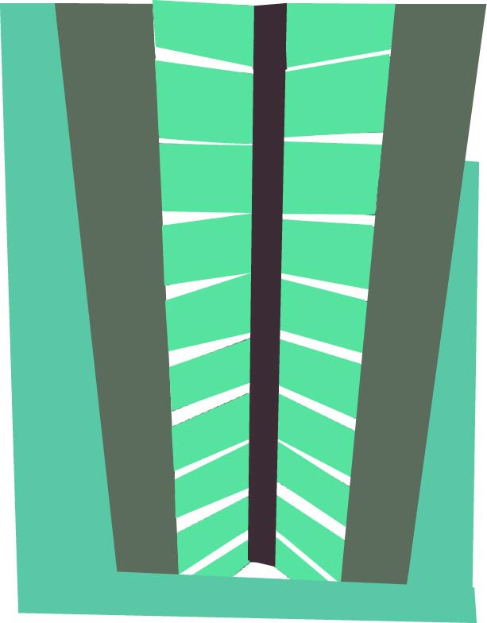
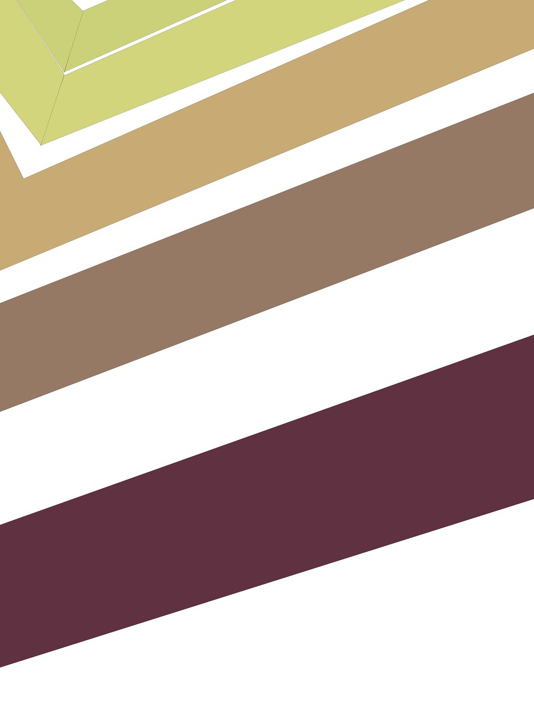

The images below are all highly influenced by the geometric abstract art movement, which is a personal favorite of mine
 





This piece never went anywhere
I love the work of Bryce Hudson, László Moholy-Nagy, Theo van Doesburg and Edna Andrade